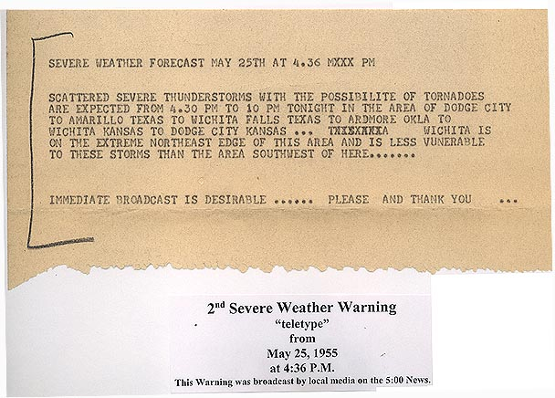

UdallMay 25, 1955
Udall, after dark.
A town's destruction, a regional forecast and the records that preserve different parts of the night.
The tornado that devastated Udall belongs to the same evening's history as Blackwell, but it was a different tornado. NWS Norman describes a later tornado developing north of Peckham, crossing into Kansas and continuing through the Udall area. Its reported loss of 80 lives belongs to the whole track, not a newly established town-only count. Read the original summary and tornado table.
This account follows the destruction, forecast documents and separate source records. More than one clock label and injury total survives. Keep those accounts beside their sources.
On this page
THE HISTORICAL ACCOUNT
The town in the damage account.
NWS Wichita reproduces a historical report describing destruction across Udall from southwest to northeast, a toppled water tower, damaged railway cars and widespread building loss. These are attributed aftermath observations, not a measured street-by-street wind field. Read the report's Udall section.
The report attributes an account to survivor Wheeler Martin: a roar, hail and rain, followed by his house's collapse at a reported 2235 CST. Its clock has not been independently checked. Inspect the account and its limits.
The report credits a damage survey to Phillips. Its authors interpret the survey and radar as evidence of continuity from U.S. Highway 166 through Udall, with gaps up to about 3.5 miles and a broader path exceeding 50 miles. This positive historical continuity evidence does not resolve the retained coordinate or clock differences. Read the survey interpretation separately.
Source edition, inspection and return to this section.
On this pageREGIONAL DOCUMENT, INDIVIDUAL RECEIPT UNKNOWN
A forecast was not proof of receipt.
NWS Wichita's archive preserves two regional forecast documents. The second describes a broad city-defined severe-weather region and requests immediate broadcast. Its typewritten issue and valid-period labels are separate from a later caption reporting a local-media broadcast. Neither identifies an Udall resident who received the message, supplies a checked time zone or establishes that person's warning lead time.


A regional forecast document preserved by NWS Wichita. The original issuing office, typist and scan creator remain unidentified. The typewritten forecast and later archive caption are separate source layers. The complete bottom caption is retained.
This is the same unchanged document used in the Blackwell account, reproduced under the existing item-specific NWS use-policy assessment. Its archive caption's broadcast assertion is not an independently checked station log. No endorsement is implied.
Open the complete document · Original JPEG at NWS · Source, byte identity and item use basis · NWS use policy.

The document adds regional context. It does not establish that everyone was warned or that nobody was warned. Compare the separate Blackwell warning account.
On this pageONE DOCUMENTARY ASSOCIATION
Five records keep their own identities.
The reviewed association below follows the reported county progression. Each record retains its original length, loss and clock fields. These are source records, not five independent cameras or a newly measured moving path.
10096418 · Kay, Oklahoma
- Reported label, May 25
- 22:00 CST
- Length field
- 8 miles
- Direct deaths / injuries
- 0 / 0
10027629 · Sumner, Kansas
- Reported label, May 25
- 22:15 CST
- Length field
- 24.7 miles
- Direct deaths / injuries
- 5 / 3
10027630 · Cowley, Kansas
- Reported label, May 25
- 22:45 CST
- Length field
- 2.3 miles
- Direct deaths / injuries
- 75 / 270
10027631 · Cowley, Kansas
- Reported label, May 25
- 23:00 CST
- Length field
- 7.8 miles
- Direct deaths / injuries
- 0 / 0
10027632 · Cowley, Kansas
- Reported label, May 25
- 23:15 CST
- Length field
- 13.6 miles
- Direct deaths / injuries
- 0 / 0
The five records agree with several features of the separately named Udall account: county progression, F5 classification, 80 direct deaths, 273 injuries and a maximum damage width of 1,320 yards. Their length fields sum to 56.4 miles, compared with the NWS summary's 56 miles. That arithmetic establishes neither a newly surveyed length nor the source's rounding method. NWS summary and tornado table · Association basis.
NWS and NCEI may share underlying historical material. Agreement is useful consistency evidence, not a second independent enumeration of the people affected. The retained 1955 snapshot was inspected here. Its original CSV was not reacquired or rehashed for this account. Inspect the retained source identity.
On this pageTEST THE ASSOCIATION
A shared coordinate can lead to the wrong tornado.
One boundary does not match. Udall candidate 10096418 ends at longitude -97.15, latitude 37. Candidate 10027629 begins at longitude -97.25, latitude 37. Both coordinate pairs remain unchanged.
The Blackwell comparison exposes a second problem. Its Kay record, 10096417, ends at [-97.25, 37]. That point matches the beginning of its intended Sumner comparison, 10027628. It also matches Udall candidate 10027629. Joining that second pair would attach a different tornado merely because one coordinate agrees. Inspect the intended and rejected comparisons.
The separate accounts and combined fields support a documentary association. The retained records do not supply an explicit continuation field or a surveyed line across the mismatch. No interpolated track is drawn between these endpoints. Read Blackwell's separate account · Boundary evidence.
On this pageRETAIN THE DISAGREEMENTS
Keep the clocks and counts beside their sources.
Cowley record 10027630 gives 2245 CST, versus the historical report's approximate 2235 CST. The catalogue's unresolved zone, null UTC and repeated beginning/ending labels establish no calibrated arrival or duration. Read the clock comparison.
The historical report gives 250 injuries. The later NWS account and retained whole-track comparison give 273. Keep the editions and county allocations separate. The Cowley row's 75 deaths are a county-record allocation, not a verified town-only loss. Historical report · Later account · Count comparison.
On this pageFOLLOW THE ORIGINAL ARCHIVE
Photographs remain useful at their original archive.
The first NWS photograph page supplies aftermath captions including school damage and a refuge entrance. The second page supplies aid-facility and water-tower captions. Those are attributed archive captions. The complete image pixels, photographer identities and item-specific reuse have not been qualified for this account.
The archive's map and radar overlay remain document leads. Their pixels and legends were not inspected in this qualification, and the refreshed radar request was unavailable. They supply no calibrated position or surface-wind measurement here. Inspection and image-use limits.
On this page

PEOPLE BEHIND THE RECORDS
The people are not interchangeable source rows.
The whole-track loss remains attributed to its historical source. This account does not establish a complete biographical memorial or exact individual fatality locations. It adds no personal details or map pins to suggest otherwise. Survivor testimony, damaged buildings and county totals answer different questions. They deserve to remain distinguishable.
On this pageSOURCES AND INSPECTION
Follow the history back to its evidence.
NWS Wichita's reproduced historical report
Udall storm report. The introduction and Udall section were read as maintained HTML. The underlying original report scan and authorship were not independently recovered. Edition and inspection record.
NWS Norman's later event account
Blackwell and Udall, May 25, 1955. Summary and tornado table inspected. Named events, county records and attributed whole-track totals remain separate.
Retained NCEI records
Snapshot ncei:1955:20260323. The five candidates and two Blackwell controls were inspected from the retained published shards. This is an exploratory manual association, not a new blind experiment or an independently surveyed path. Original identities, fields and limitations.
NWS Wichita's archive and regional document
Udall archive. Relevant maintained text, links and photograph-page captions were read. The forecast's complete original JPEG is the same exact item already qualified in Blackwell. Agency archive custody does not establish an unidentified photographer or clear every linked item.
Read the source and claim record · Open the complete dossier · Return to the collection.
On this page